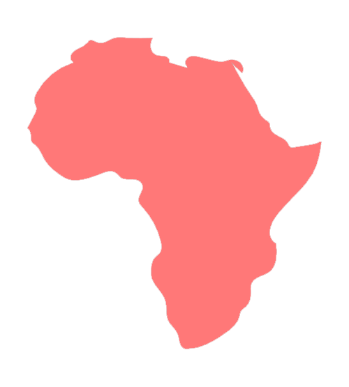

非洲地区已经成为数字困境的重灾区。由于基础设施薄弱、连接成本高昂、网络维护困难等原因，撒哈拉沙漠以南非洲的互联网普及率仅为36%，在互联网接入率最低的10个国家和地区中，有9个国家位于非洲。
在今年5月开幕的数字非洲峰会上，1200多名业界代表在会上一致认为，急需进一步完善和推动地区数字生态系统建设。然而，撒哈拉以南的非洲地区，固定宽带的现有覆盖范围仅有1%，仍有8300万人居住在距离光纤或电缆宽带连接超过50公里远的地方。架设固定宽带的成本是架设移动宽带的7.8倍，达到了该地区国民总收入的165.7%。高昂的网络基础设施建设成本，让当下的数字生态系统举步维艰。
然而，数字鸿沟对于非洲的影响，不仅限于眼前。全球移动通信系统协会最新发布的报告预测，到2025年底，北美地区的5G覆盖人口比例将超过63%，而拉丁美洲只有11%，撒哈拉以南非洲地区仅有4%。在新一轮网络技术正在普及应用的当下，数字鸿沟，正在进一步拉开其他地区同非洲的信息技术差距，损害非洲人民在数字时代所应享有的长远利益。

南亚地区在非网民人口最多的五个国家中，占据三席。由于庞大的人口基数，46%的地区互联网接入率下，仍然有10.94亿人生活在没有网络的世界之中。
在南亚，2022年使用智能手机的平均成本达到了人均薪酬的54%，而在北美，这一比例仅为2%。南亚居民平均需要支付超过一半的收入来承担智能手机的网络、维护费用。快速上涨的物价加剧了使用智能手机的难度。在2021 年至 2022 年间，南亚最便宜的智能手机的使用成本甚至增加了 20% 以上。
与此同时，南亚和非洲也是网络基础设施建设成本最高的两个地区。微薄的国民总收入难以撑起巨大的网络基础设施建设支出，更完全无法建立起完善的数字生态。
图2：世界各地网络基础设施的建设成本
数据来源：3W Foundation, "The cost of smartphones falls, but they remain unaffordable for billions around the world".
注：使用智能机的成本是指在当地购买一台市场上最便宜的智能手机所需花费的成本，然而这一成本仍然可能被低估了.